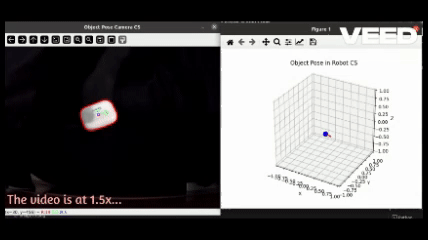

Hello I'm
Sawera Yaseen
I am an Erasmus Mundus Scholar and a Master's student in Intelligent Field Robotic Systems (IFRoS). This joint master’s program is offered by Universitat de Girona, Spain, and the University of Zagreb, Croatia. Currently, I am working on my Master’s thesis at the Smart Mechatronics and Robotics (SMART) research group at Saxion University of Applied Sciences. My research focuses on the detection of ‘invisible’ obstacles for drone obstacle avoidance. I am passionate about robot perception and autonomous navigation, with a strong interest in applying robotics and AI to solve real-world challenges. My goal is to contribute to cutting-edge advancements in robotics, particularly in intelligent autonomous systems.
Projects

Frontier Based Exploration
SLAM System with EKF and ArUco Markers
Kinematic Control System for a Mobile Manipulator

Real-Time 2D Pose Estimation for Automated Parts-Picking
Skills